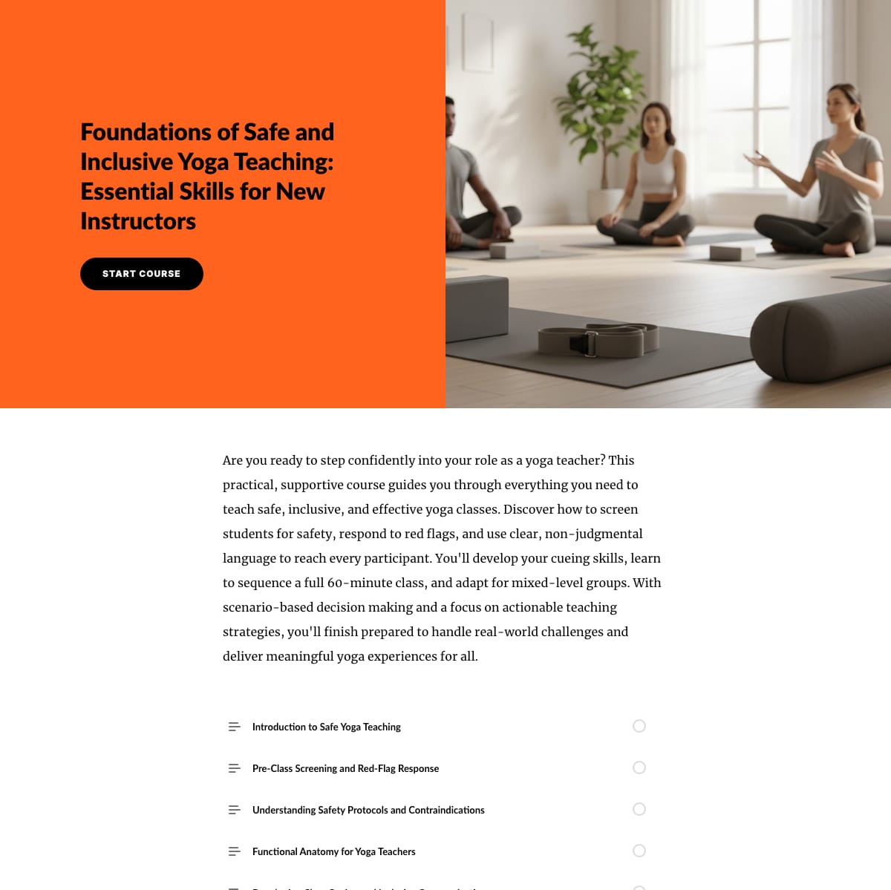

eLearning Design · Articulate Rise 360 · Independent Professional Project
Foundations of Safe and Inclusive Yoga Teaching
A 10-module professional eLearning course designed and developed end-to-end in Articulate Rise 360 — from curriculum architecture and scenario-based interaction design to assessment strategy and companion review assets in YouMind.
The Course
A complete eLearning course for new yoga instructors — built in Rise 360
This course was independently designed and developed to address a genuine gap: new yoga instructors often complete studio teacher trainings with strong physical skills but insufficient preparation for the safety, communication, and pedagogical demands of leading a real class. The result is instructors who are technically competent but unprepared for the messy realities — a student with a herniated disc, a mixed-level group, a participant who doesn't speak the cue language.
The course is titled Foundations of Safe and Inclusive Yoga Teaching: Essential Skills for New Instructors and is designed to be practical and immediately applicable. Learners work through ten modules that build from safety awareness and screening through cueing, sequencing, and scenario-based teaching decisions — finishing with a final assessment and practicum rubric to confirm readiness.

Course Architecture
10 modules — sequenced from awareness to application
The curriculum follows a deliberate learning arc: establish safety awareness first, build the knowledge base next, and then put it into applied practice through cueing, sequencing, and scenario-based decision-making. The final module and practicum rubric serve as both summative assessment and transfer tool.
- Module 1 — Introduction to Safe Yoga Teaching. Frames the instructor's responsibility for physical and psychological safety. Establishes the "inclusive by default" mindset that runs through the rest of the course.
- Module 2 — Pre-Class Screening and Red-Flag Response. Covers intake forms, verbal screening protocols, and how to respond when a participant discloses a relevant condition. Scenario-based practice built in.
- Module 3 — Understanding Safety Protocols and Contraindications. Common injuries and conditions, contraindicated movements, and how to modify proactively rather than reactively.
- Module 4 — Functional Anatomy for Yoga Teachers. Focused anatomy content — joints, planes of motion, load and range — presented at the level of instructional decision-making, not clinical diagnosis.
- Module 5 — Cueing Skills: Language That Reaches Every Student. Non-judgmental cueing, multi-modal instruction (visual, auditory, tactile), body-neutral language, and avoiding comparative or exclusionary framing.
- Module 6 — Sequencing a 60-Minute Class. Structural principles for class design: opening, warm-up logic, peak sequence, cool-down, and savasana. Includes a planning template.
- Module 7 — Teaching Mixed-Level Groups. Strategies for offering simultaneous modifications, reading the room, and maintaining flow when participants have divergent needs and abilities.
- Module 8 — Scenario-Based Decision Making. Branching scenarios where learners navigate real-class situations: a student collapses, a participant refuses modification, a class goes off-sequence. Immediate feedback with rationale.
- Module 9 — Building Your Teaching Practice. Self-assessment frameworks, professional development habits, and how to seek and use feedback from students and peers.
- Module 10 — Final Assessment and Practicum Rubric. Knowledge check covering all prior modules, plus a practicum rubric instructors can use to self-assess or be observed during a real teaching session.
Design Decisions
Why this course is designed the way it is
Scenario-based over lecture-based
Yoga instructors don't fail because they lack factual knowledge — they fail in the moment of decision: a student winces, a cue lands wrong, a class dynamic shifts. Scenario-based modules (especially Modules 2 and 8) force learners to practice those decisions before they're in a real class, building the pattern recognition that classroom lectures can't create.
Safety before anatomy
Most yoga teacher training curricula front-load anatomy. I sequenced safety awareness and screening first — because a new instructor who can name every muscle but doesn't know how to respond to "I have a herniated disc" is a risk. Establishing the safety mindset early frames all subsequent content.
Inclusive language as structure, not an add-on
The cueing module (Module 5) treats inclusive language as a core instructional skill, not a diversity checkbox. Non-judgmental framing, body-neutral cues, and multi-modal instruction directly affect whether students with different bodies and abilities can actually use the instruction — which is the whole point of good teaching.
Practicum rubric as transfer bridge
Online courses routinely fail at transfer — learners pass the knowledge check and then don't change behavior in practice. The practicum rubric (Module 10) bridges course completion and real-world application: it's a self-assessment and observation tool instructors keep after the course ends, anchoring continued improvement to the course's learning objectives.
Rise 360 for paced, structured delivery
Rise was chosen deliberately over Storyline for this course: its linear lesson structure enforces the intended learning sequence, its built-in block types (text + media, labeled graphic, process, scenario) support the content without over-engineering, and it produces clean mobile-responsive output that matches where most learners access this type of content.
YouMind companion for retention
Rise handles delivery; YouMind handles retention. The companion flashcard and study pack package targets the knowledge elements (anatomy terms, contraindications, cueing principles) that benefit from spaced repetition outside the course experience — separating initial learning from review into the right tool for each job.
Tools & Process
End-to-end design and development
This project was completed independently, covering every phase of the learning experience design cycle:
- Needs and audience analysis: Identified the gap between typical studio teacher training outputs and real-class readiness requirements through review of certification standards and common failure modes reported by new instructors.
- Curriculum architecture: Mapped learning objectives to Bloom's levels across all 10 modules; sequenced content to build from awareness → knowledge → application → transfer.
- Content writing and interaction design: Wrote all course copy, scenario scripts, and assessment items. Designed branching logic for the scenario modules. Selected and structured Rise 360 blocks to match each content type.
- Visual and brand design: Established the orange/bold visual identity in Rise, selected photography to reflect the diverse, inclusive learner population the course is designed for.
- Assessment strategy: Designed the final knowledge check and practicum rubric to assess both declarative knowledge and transfer readiness.
- Companion asset development: Built the YouMind flashcard and review package to support spaced retrieval of key knowledge elements post-course.